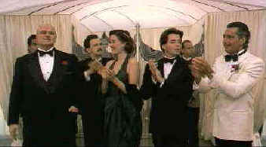

Freshman.The/A-,A-
|
| Columbia/1990/103m/ANA,WS1.85,PS1.33
|
Welcome to the
outrageously wacky world of writer/director Andrew Bergman. When Bergman lets his
imagination take off in the most improbable directions, the result is unbridled hilarity,
like The Freshman.
In a wonderful introductory sequence, Clark Kellogg gets a marvelously unceremonious
welcome to the big city by Victor Ray. Kellogg, freshly off to film school, trips over a
derelict on the steps of Penn Station and has the ill fortune of encountering Ray's
helping hand. Ray, playing on Kellogg's obvious wide-eyed innocence, offers him a
limousine ride to his destination when Kellogg asks for directions to the subway. The
great baptismal makes all the action that follows possible, and audiences will be grateful
for Kellogg's missed step.
 |
All dressed up and ready to
kill. ©Columbia Tristar |
After a short, entertaining, street chase, Ray introduces
Kellogg to his uncle, a Mafioso big wig named Carmine Sabatini who just happens to
resemble Marlon Brando in The Godfather. There's a lot of wonderful humor based on
the audience's knowledge of The Godfather, and with Brando playing the Sabatini(A
delightful spoof of his Godfather role.) to Kellogg's innocent, the humor quotient
is escalated to the next level. Credit Brando for keeping a straight face.
I can't think of too many writers with the audacity to base
so much of the screenplay on the delights of rare cuisine. To be sure, Bergman is not
afraid of the slapstick. The chase through the mall with Clark and a very funny Frank
Whaley as Steve, his roommate, in hot pursuit of a cold blooded creature is a joy. And
Bert Parks singing an introduction to that very special meal, while funny, only achieves
its level of hilarity knowing that Parks is doing a sends up of all his hosting chores at
the Miss America Pageant.
The Freshman provides Matthew Broderick with a fine showcase for his comic talent.
Along with a wry Brando, Bruno Kirby milks miles of mischief out of Victor Ray and
Penelope Ann Miller is pleasantly goofy as Sabatini's sex hungry daughter.
Given Columbia Tristar's typically outstanding treatment, The
Freshman is another smashing DVD. The anamorphic transfer has been turned into a
crisply imaged DVD with strong accurate colors throughout. Bergman's high key cinematic
palette is served well by the DVD medium. The dialogue is delivered cleanly if you can
catch every line over your own laughter. The Dolby Digital 2-channel sound serves The
Freshman well.
|
|
|
|

Lady Eve,
The (SE) A,C+

Wonderful classic comedy from writer/director Preston Sturges. Henry Fonda and Barbara Stanwyck
star.

The major studio vaults are filled with incredible film treasures which
few have seen the light of DVD.
Open the Vaults

Selections from the Feature Archive include articles on
Akira Kurosawa, Blonde Bimbos,
Frank
Darabont, Steven Culp,
John
Herzfeld or Vietnam: The
Hollywood Pariah, and many more....
Director Walks the Wire
Balanced by an armor of movie lore and filmmaking daring, director John Herzfeld is comfortable
walking the high wire. Check out this interview by Stu Kobak.

The
Movie Poster Archive includes extensive poster images from the films of stars like Susan Hayward,
Kirk Douglas, Katharine Hepburn and many more. Our featured star is Doris Day.
|